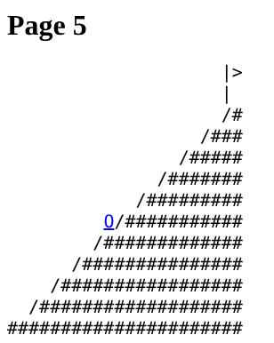

Phillip Jones, 2026
Push is a ten-page hypertext that makes the viewer into Sisyphus, the king of Greek myth condemned to roll a boulder up a hill forever, only to watch it roll back down each time he nears the top. Each page is drawn only in text: a ramp of slashes and a single letter O. The O is the link. To move forward, you have to click the boulder, and every click pushes it one row higher.
The navigation is the story. The menu at the top lists all ten pages, but only the next one is ever a link: you cannot skip ahead or take a shortcut. Every page asks for one more click, the way an inbox, a feed, or a to-do list always asks for one more thing. On the tenth page the O is back at the bottom, and the only way on is to start again. Push asks whether endless effort can still mean something, or, as Albert Camus wrote, whether we must imagine Sisyphus happy.
